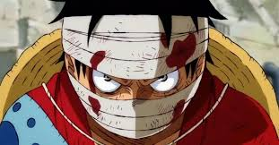
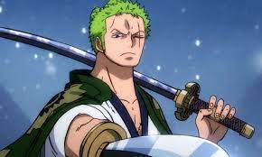
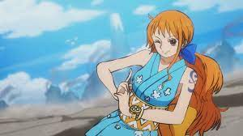
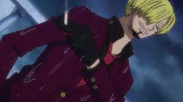
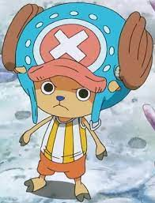
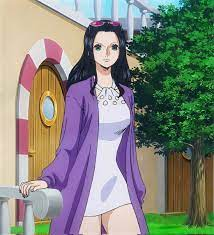
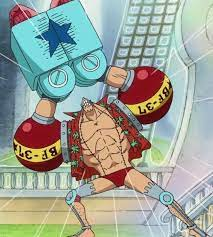
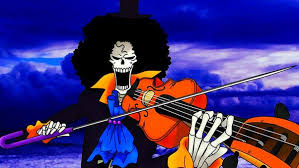
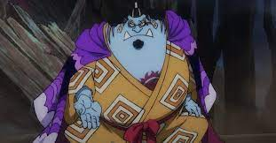

One Piece is a Japanese manga and anime series written and illustrated by Eiichiro Oda. The story follows Monkey D. Luffy, a young boy whose body gains the properties of rubber after unintentionally eating a Devil Fruit. With his diverse crew of pirates, named the Straw Hat Pirates, Luffy explores the Grand Line in search of the world's ultimate treasure known as "One Piece" in order to become the Pirate King.
The series is set in a world of sea-faring, swashbuckling pirates, soldiers, revolutionary and various other forms of criminals and outcasts. The main theme of the story is Monkey D. Luffy's quest to become the Pirate King by finding the legendary treasure known as One Piece and to gather a diverse crew, named the Straw Hat Pirates, to help him achieve this goal.
Throughout his journey, Luffy faces and defeats numerous enemies and makes allies, while also discovering the truth behind the world's history and the mysteries of the Void Century. He also learns about the significance of the Will of D, a force that connects all living things, and the role it plays in the world.
The series is known for its unique storytelling, memorable characters, action-packed battles and its comedic moments. It has been running for over two decades and has become one of the most popular and best-selling manga series of all time.
Monkey D. Luffy, also known as "Straw Hat Luffy" is the main protagonist of the manga and anime, One Piece. He is the captain of the Straw Hat Pirates, and his goal is to find the legendary treasure left behind by Gol D. Roger and become the Pirate King.

Roronoa Zoro, also known as "Pirate Hunter" Zoro, is a character in the manga and anime One Piece. He is the combatant of the Straw Hat Pirates, one of the two swordsmen and a Senior Officer of the Straw Hat Grand Fleet. He is also recognized as the right-hand man of the crew's captain, Monkey D. Luffy. He was formerly a bounty hunter and was the second member to join Luffy's crew. He joined the crew in the Romance Dawn Arc.

Nami is a character in the manga and anime One Piece, known as "Cat Burglar" Nami. She is the navigator of the Straw Hat Pirates, a Senior Officer of the Straw Hat Grand Fleet, the third member of the crew and the second to join, joining the crew during the Orange Town Arc. She is also the adopted sister of Nojiko, after the two were orphaned and taken in by Bell-mère.

Usopp is a character in the manga and anime One Piece, known as "God" Usopp. He is the sniper of the Straw Hat Pirates, one of the Senior Officers of the Straw Hat Grand Fleet, the fourth member of the crew and the third to join. He joined the crew at the end of the Syrup Village Arc. He left the crew during the Water 7 Arc, but rejoined at the end of the Post-Enies Lobby Arc.

Sanji is the cook of the Straw Hat Pirates and a senior officer of the Straw Hat Grand Fleet. He is the fifth member to join the crew and the fourth to do so at the end of the Baratie Arc. He was born as the third son and fourth child of the Vinsmoke family and was a former prince of the Germa Kingdom. He disowned his family twice in his life, first as a child and later as an adult. He was taken in by Zeff and worked as a sous chef at the Baratie until he met Monkey D. Luffy and joined his crew.

Tony Tony Chopper is a character in the manga and anime One Piece, known as "Cotton Candy Lover" Chopper. He is the doctor of the Straw Hat Pirates, one of the Senior Officers of the Straw Hat Grand Fleet, the sixth member of the crew and the fifth to join. He joined the crew at the end of the Drum Island Arc. He was temporarily forced to join the Foxy Pirates during the Long Ring Long Land Arc, but quickly returned to Luffy's crew.

Nico Robin is an archaeologist and one of the senior officers of the Straw Hat Pirates and the Straw Hat Grand Fleet. She is the seventh member of the crew and the sixth to join, doing so at the end of the Arabasta Arc. She temporarily left the crew during the Water 7 Arc but rejoined during the Enies Lobby Arc. She is also known as "Devil Child" and the "Light of the Revolution".

Franky Franky, also known as "Iron Man" is the shipwright and a senior officer of the Straw Hat Pirates and the Straw Hat Grand Fleet. He is the eighth member of the crew and the seventh to join, doing so at the end of the Post-Enies Lobby Arc. He was born as Cutty Flam but chose to go by his nickname of "Franky" and eventually discarded his true name. He is originally from the South Blue, was abandoned by his family at the age of four, and eventually made his way to Water 7. He was a member of Tom's Workers until an incident resulted in his body being heavily damaged and required him to augment himself into a cyborg. Upon returning to Water 7, he became the leader of the Franky Family, a group of ship dismantlers and bounty hunters.

Brook, also known as the "Soul King" is the musician, swordsman and a senior officer of the Straw Hat Pirates and the Straw Hat Grand Fleet. He is the ninth member of the crew and the eighth to join, doing so at the end of the Thriller Bark Arc. He ate the Yomi Yomi no Mi, which allowed him to return to life after death once. He learned to tap deeper into the powers of his Devil Fruit, giving him significant control over his own soul and the souls of others.

Jinbe, also known as the "Knight of the Sea" is the helmsman and a senior officer of the Straw Hat Pirates and the Straw Hat Grand Fleet. He is the tenth member of the crew and the ninth to join, doing so during the Wano Country Arc. He is a whale shark fish-man and a powerful master of Fish-Man Karate. His dream is to fulfill his former captain Fisher Tiger's dying wish of coexistence and equality between humans and fish-men. He was a member of the Sun Pirates, eventually becoming its second captain after the death of their original captain, Tiger. He was also one of the Seven Warlords of the Sea, but he resigned during the Summit War of Marineford.
